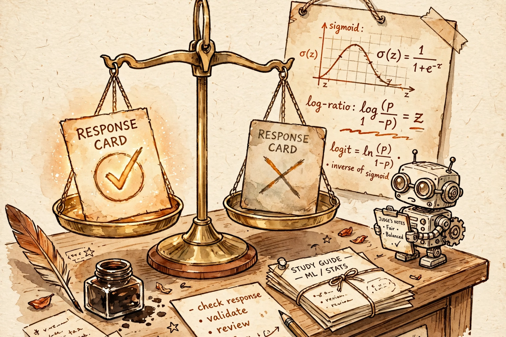

Yesterday you operated the full RLHF machine: a reward model, a value head, a rollout loop with generation inside the training step, and a clip holding the trust region. Today the machine dissolves into a single line of math. Direct Preference Optimization starts from the same KL-constrained objective PPO climbs — and notices it has a closed-form solution. Solve it on paper, invert it, and the reward function turns out to be hiding inside the policy itself. This guide walks the full derivation: intuition → mechanism → the math that matters, plus the variant family tree and the failure modes interviewers actually probe.

B5 — PPO: The Clip That Tames the Optimizer. Recap: PPO climbs the
KL-constrained objective max_π E[r(x,y)] − β·KL(π ‖ π_ref) with a clipped
surrogate, a value head, and a five-stage rollout loop that keeps four model copies in
GPU memory. Every piece of that machine exists to solve one optimization problem safely.
Today you solve that problem on paper instead of climbing it.
B3 — the RLHF pipeline. Recap: stage three's one-line objective (maximize reward, stay near the SFT reference) becomes today's derivation starting point. We are not inventing a new objective — we are solving the old one analytically.
B4 — Reward Modeling. Recap: the Bradley–Terry loss you used to fit the judge is the exact loss the policy will now fit directly. And B4's over-optimization curve — proxy climbs, gold peaks, then declines against d = √KL — does not vanish when the judge goes implicit; it hides inside a log-ratio, which is why today's failure modes still echo B4.
Spaced retrieval, third appearance: remember the masked-CE averaging subtlety from SFT — "watch token count, not example count"? It returned in yesterday's token-level PPO loss; it returns again today, because DPO's implicit reward is a sum over token log-probs, and sequence length becomes a reward-hacking lever all on its own. (See §4.)
Start with what PPO costs, because the entire algorithm is downstream of that bill: four model copies (policy, reference, reward model, value head), a rollout loop with generation — the slowest operation in the building — sitting inside the training step, a reward model that must be retrained the moment the policy drifts off its data, and five hyperparameters answering "how far may the policy move?" in five different dialects.
DPO's authors asked a dangerous question: the thing the machine is optimizing — the
KL-constrained reward objective — does it have a closed-form solution? For most RL
objectives the answer is no. For this one, the answer is yes, and it has been sitting in the
RL textbooks the whole time. The optimal policy for
max_π E_{y∼π}[r(x,y)] − β·KL(π(·|x) ‖ π_ref(·|x)) is a Boltzmann distribution
over the reference, tilted by the reward:
Now read that equation backwards — solve for the reward:
The reward is the log-ratio of the optimal policy to the reference, plus a term that depends only on the prompt. The judge was never a separate thing: any policy already encodes a reward in its own log-ratios. Your language model is secretly a reward model — the paper's title, and now the derivation, says it out loud.
One-line version: PPO pays a whole factory to climb a hill; DPO notices the hill's summit has a formula, reads the formula backwards, and discovers the reward function was hiding inside the policy all along.
From the inverted reward, the machinery assembles itself in five steps:
Plug that reward expression into B4's Bradley–Terry model,
p(y_w ≻ y_l | x) = σ(r(x,y_w) − r(x,y_l)), and the partition function
cancels — Z(x) appears in both terms and vanishes in the difference. What
survives is a loss over policies alone:
Read it as classification, not RL: for each prompt with a preferred and a dispreferred completion, the sigmoid asks "does the policy rank the winner above the loser, relative to the reference?" and the log-loss pushes it toward yes.
The gradient tells the deeper story:
where r̂ = β·log(πθ/πref) is the implicit reward. The weight σ(r̂l − r̂w) is large exactly when the model currently ranks the pair wrongly, and decays toward zero as the ranking becomes correct. Yesterday's clip was an engineered mechanism that said "don't get rich on one token" — DPO's weight is the same caution arrived at analytically: the update concentrates on the pairs the model still gets wrong and leaves mastered pairs alone.
And β, which was the KL-penalty strength in PPO, survives as the temperature of the implicit reward: small β keeps the log-ratios on a tight leash near the reference; large β lets preferences move the policy aggressively. One knob, same job, no adaptive controller required.
First, the derivation's hidden assumption. The closed form is exact only if the policy class can represent the optimum and the preference data is consistent with a single Bradley–Terry reward — the same transitivity assumption B4's judge quietly makes. Violate it — noisy labels, cyclic preferences, genuinely multimodal "good" answers — and DPO is fitting a reward that doesn't exist; it fits the noise instead. That is why DPO is famously sensitive to label noise, and why the documented inconsistencies in the Anthropic HH dataset bite DPO harder than they bite PPO: PPO's online rollouts can route around bad labels, while DPO's static loss memorizes them.
Second, the memory bill — the Staff-level line for the F1 design doc. PPO holds policy + reference + reward model + value head (four copies, plus optimizer states); DPO holds policy + reference (two). But note what you do not get to delete: πref is still there, frozen, anchoring the KL budget. DPO is not reference-free — that is ORPO's trick, below.
Third, the length leak — the token-count ghost's third appearance. Log πθ(y|x) is a sum over token log-probs, so a longer completion accumulates a larger-magnitude implicit reward whether or not it is better. SFT said "watch token count, not example count" for masked-CE averaging; PPO inherited it as token-level loss normalization; DPO inherits it as a length bias that lets verbosity masquerade as quality. SimPO's fix — dividing the log-ratio by |y| — is the same lesson wearing new clothes.
DPO is fully off-policy: it trains on static preference pairs and never generates during training. That deletes the rollout bottleneck — the entire reason B8 exists for PPO — but it also deletes exploration. The policy can never learn from a completion it never sees, and once it drifts from the preference distribution there is no online correction the way PPO's fresh rollouts provide.
Practitioners answer with iterative (online) DPO: regenerate preference data from the current policy between rounds — score new completions, rebuild pairs, train again — recovering some of PPO's exploration at a fraction of the cost. Think of it as DPO with a scheduled data-refresh cron job: each round's policy becomes the next round's data generator, shrinking the distribution gap the offline loss would otherwise compound.
DPO also still over-optimizes. The implicit reward is a reward model with no separate parameters, and B4's curve survives: the log-ratio can be pushed into regions the reference never modeled, especially under a weak reference. The mitigation playbook is B4's playbook — iterate, re-anchor, and remember that pushing β up buys expressiveness at the cost of the KL leash.
DPO's elegance comes with three bills: the reference-model tax (two copies, one frozen), the length leak, and the noise sensitivity. Every major variant pays one of them. Know the pattern, not just the acronyms:
IPO (Azar et al., 2023) adds a quadratic regularization term so the model stops overfitting the Bradley–Terry margin — the answer to "why does DPO overfit deterministic preferences?" KTO (Ethayarajh et al., 2024) replaces win/lose pairs with binary thumbs-up/down feedback via prospect theory, for when you have "good/bad" but no "A beats B". ORPO (Hong et al., 2024) folds an odds-ratio preference term directly into SFT — no reference model, a single training run. SimPO (Meng et al., 2024) drops the reference model, normalizes by length, and adds an explicit margin — the length-leak fix plus reference-tax relief in one.
Cover the answers. Say each one aloud until it's clean.
max_π E_{y∼π}[r(x,y)] − β·KL(π(·|x) ‖ π_ref(·|x)) → a Boltzmann distribution:
π*(y|x) = π_ref(y|x)·exp(r(x,y)/β) / Z(x), where Z(x) normalizes over y.
r(x,y) = β·log(π*(y|x)/π_ref(y|x)) + β·log Z(x) — the reward is β times the
log-ratio of optimal policy to reference, plus a prompt-dependent constant. Any policy encodes
a reward in its own log-ratios.
When you plug the reward expression into the Bradley–Terry model
p(y_w ≻ y_l) = σ(r(x,y_w) − r(x,y_l)), Z(x) appears in both terms and vanishes in
the difference. Without that cancellation you'd need to compute an intractable normalizer per
prompt — the loss would be untrainable.
It upweights exactly the pairs the model currently ranks wrongly (weight ≈ 1) and switches off mastered pairs (weight → 0). PPO used the engineered clip for this "don't get rich on one token" caution; DPO's weight is the same caution arrived at analytically.
β is the KL-penalty strength (surviving as the implicit reward's temperature). Too small: the log-ratios stay leashed to the reference and the preference signal can't move the policy. Too large: preferences move the policy aggressively with no leash — collapse into the loudest pairs, off-reference regions, and B4-style over-optimization of the implicit reward.
Two reasons: (a) the derivation assumes preferences are consistent with a single Bradley–Terry reward (transitivity) — noise/cyclic preferences mean fitting a reward that doesn't exist; (b) DPO is fully off-policy, so bad labels are memorized by a static loss, while PPO's online rollouts can route around them. This is why HH-dataset inconsistencies bite DPO harder.
π_ref, frozen: it's the KL anchor, and the implicit reward is a log-ratio against it. DPO halves the memory bill (policy + reference vs PPO's four copies + optimizer states) but is not reference-free — that's ORPO's trick. In the F1 design doc: two copies is the line that decides which algorithm your cluster can afford.
Log π_θ(y|x) sums token log-probs, so longer completions accumulate larger-magnitude implicit rewards regardless of quality — verbosity masquerades as quality. SimPO divides the log-ratio by |y| (length normalization), drops the reference, and adds an explicit margin. Same ghost as SFT's "watch token count, not example count" masked-CE averaging and PPO's token-level loss normalization — third appearance.
Same objective as RLHF, closed-form solution, invert to get reward = β·log-ratio + const, plug into Bradley–Terry, Z cancels → pure classification on (prompt, winner, loser) pairs — no reward model, no value head, no rollouts, two copies instead of four, one stable loss. Price: off-policy (no exploration), noise-sensitive, length-biased — the IPO/KTO/ORPO/SimPO family each fixes one bill. Pick DPO with clean preference data and a strong SFT start; keep PPO or go online when the reward only reveals itself through trajectories, like agentic tool use.
"DPO starts from the observation that the KL-constrained RL objective PPO optimizes has a closed-form solution: the optimal policy is the reference tilted by exp(r/β). Invert it and the reward is just β times the log-ratio of policy to reference, plus a prompt-dependent constant. Plug that into the Bradley–Terry preference model and the constant cancels, leaving a pure classification loss on (prompt, winner, loser) pairs — negative log-sigmoid of the β-scaled log-ratio difference. The gradient upweights exactly the pairs the model still ranks wrongly. So DPO optimizes the same objective as RLHF with no reward model, no value head, no rollouts, no clip — two model copies instead of four, one stable loss. The price: fully off-policy, so no exploration and no online correction; sensitive to label noise; a length bias because log-probs sum over tokens — that's what IPO, KTO, ORPO, and SimPO each fix. I'd pick DPO with clean preference data and a strong SFT start; I'd keep PPO — or go online — when the reward only reveals itself through trajectories, like agentic tool use, where static pairs can't teach what exploration finds."